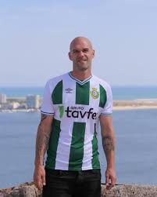

"O GOAT das Distritais"
Goleador nato, guerreiro incansável. De caixa de supermercado a profissional da Liga Portuguesa — a história de Bruninho é a prova de que a perseverança vence sempre.

Bruno Guilherme Silva Martinho, conhecido para todos como Bruninho, nasceu a 1 de agosto de 1989 em Arrentela, Setúbal. É um avançado centro com dupla nacionalidade portuguesa e macaense, atualmente no Vitória FC de Setúbal.
A sua história é de superação total. Durante anos, Bruninho jogou à noite e trabalhava de dia como caixa de supermercado. A bola era paixão, não sustento. Tudo mudou no Padroense — onde marcou 21 golos numa época e conquistou a atenção do Vitória de Setúbal.
Em 2012, fez o salto mais improvável do futebol português: da terceira divisão diretamente para a Liga Portuguesa. Companheiro de João Mário e Pedro Santos, adaptou-se ao profissionalismo e viveu o seu sonho. Ao longo da carreira, conquistou 4 subidas de divisão em 4 épocas consecutivas como melhor marcador — um registo histórico nos distritais.
Com 1,86 m e 86 kg, Bruninho é uma presença dominadora: físico imponente, instinto de golo apurado, e uma entrega de 100% em cada jogo. Como dizem os treinadores — "luta por cada lance como se fosse o último da sua vida".
"Era um jogador amador. Trabalhava, treinava à noite. Em julho de 2012, tudo mudou com a ida para o Sado. Foi um choque saltar da terceira divisão logo para a primeira liga."
| Época | Clube | País | Competição | Golos | Destaque |
|---|---|---|---|---|---|
| 2010/11 | Padroense FC | 🇵🇹 | 3ª Divisão | ~15 | Quase subida à II Liga |
| 2011/12 | Padroense FC | 🇵🇹 | 3ª Divisão | 21 | 🏆 Recorde pessoal Melhor Marcador |
| 2012/13 | Vitória de Setúbal | 🇵🇹 | Liga NOS | 1+ | Estreia no profissionalismo. Golo ao Moreirense (5-0) |
| 2013/14 | Vitória de Setúbal | 🇵🇹 | Liga NOS | — | 2ª época no Sado. Com João Mário no plantel |
| 2014/15 | FC Penafiel | 🇵🇹 | Liga NOS | — | 3ª época na Liga. Descida dos durienses em 2015 |
| 2015/16 | FC Penafiel / GD Bragança | 🇵🇹 | II Liga / CP | — | Rescindiu com Penafiel. Novo desafio em Bragança |
| 2017/18 | CD Mafra | 🇵🇹 | Camp. Portugal | 19+ | Bis no playoff vs Vilaverdense Melhor Marcador |
| 2018/19 | Charneca de Caparica | 🇵🇹 | Distrital | — | Subida de divisão Melhor Marcador |
| 2019/20 | Amora FC | 🇵🇹 | Distrital | — | Subida de divisão Melhor Marcador |
| 2019/20 | Windsor Arch Ka I | 🇲🇴 | Liga Macau | — | Aventura internacional em Macau |
| 2019/20 | Benfica Macau | 🇲🇴 | Liga Macau | — | 2.º clube em Macau. Dupla nacionalidade 🇵🇹🇲🇴 |
| 2020/21 | FC Barreirense | 🇵🇹 | AF Setúbal | — | 🏆 Campeão Hat-Trick no título Melhor Marcador |
| 2021/22 | Atlético CP | 🇵🇹 | Camp. Portugal | — | "Goleador nato" — Dani, Diretor Desportivo do Atlético CP |
| 2021/22 | GD Fabril / Oriental Dragon | 🇵🇹 | Distrital | — | Passagem por clubes da Margem Sul |
| 2022/23 | FC Barreirense | 🇵🇹 | AF Setúbal | — | Regresso ao Barreirense |
| 2023/24 | Atlético Malveira | 🇵🇹 | Distrital | — | Continuação no futebol distrital |
| 2023/24 | Olímpico Montijo | 🇵🇹 | Distrital | — | Referência do ataque do Montijo |
| 2024/25 | Olímpico Montijo | 🇵🇹 | Distrital | — | Mais uma época dominante |
| 2025/26 | Vitória FC · Setúbal | 🇵🇹 | Camp. Portugal | — | 🏠 Regresso a casa! Contrato até Jun 2026 |
* Alguns golos com dados incompletos nas competições distritais. Estimativa total: 200+ golos na carreira.